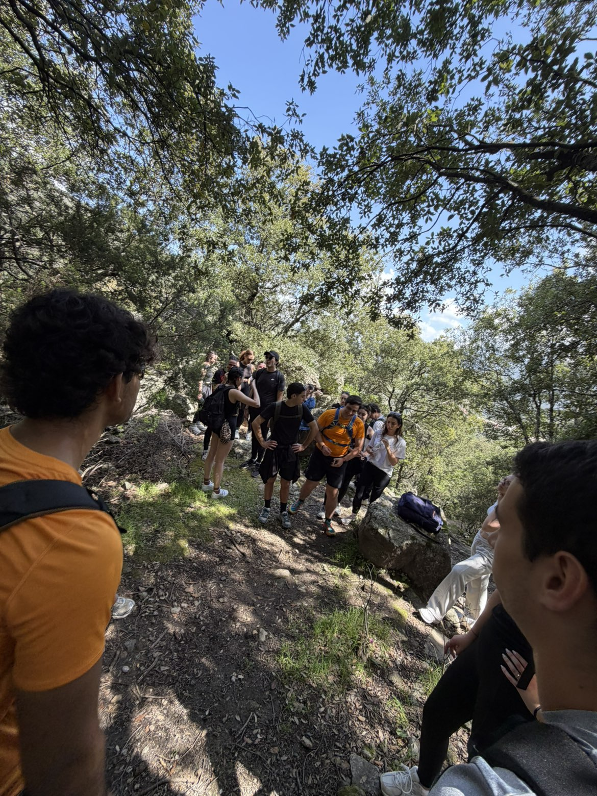
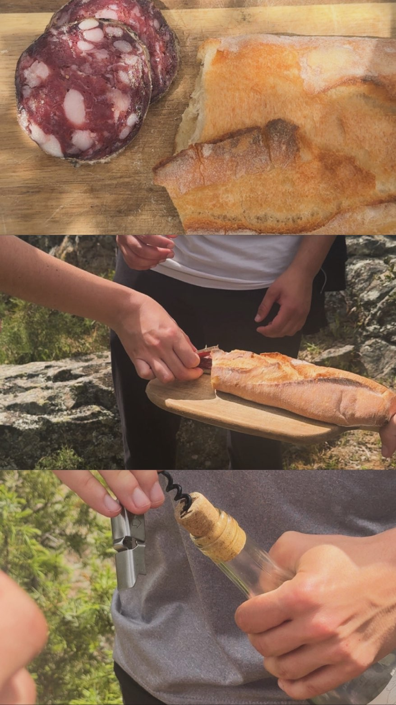
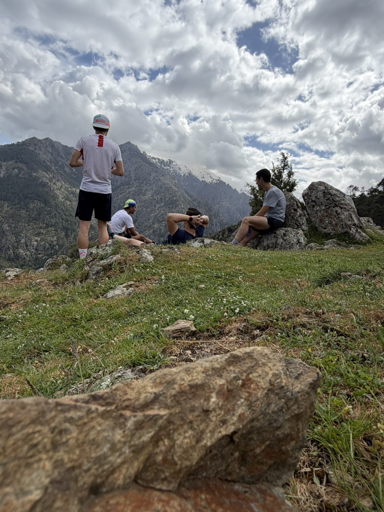
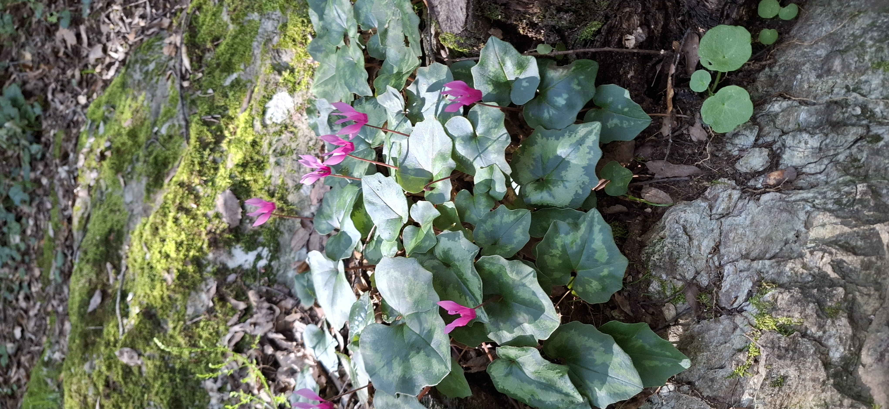
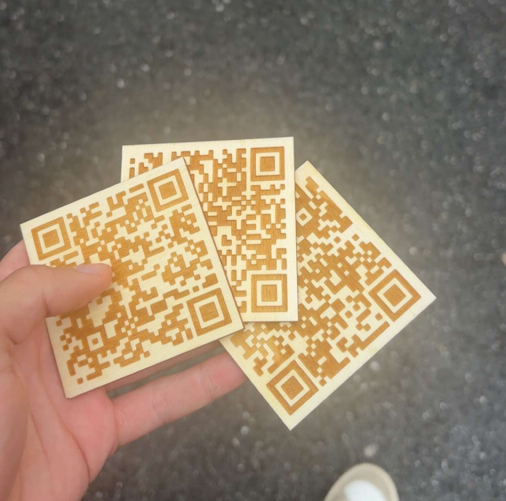
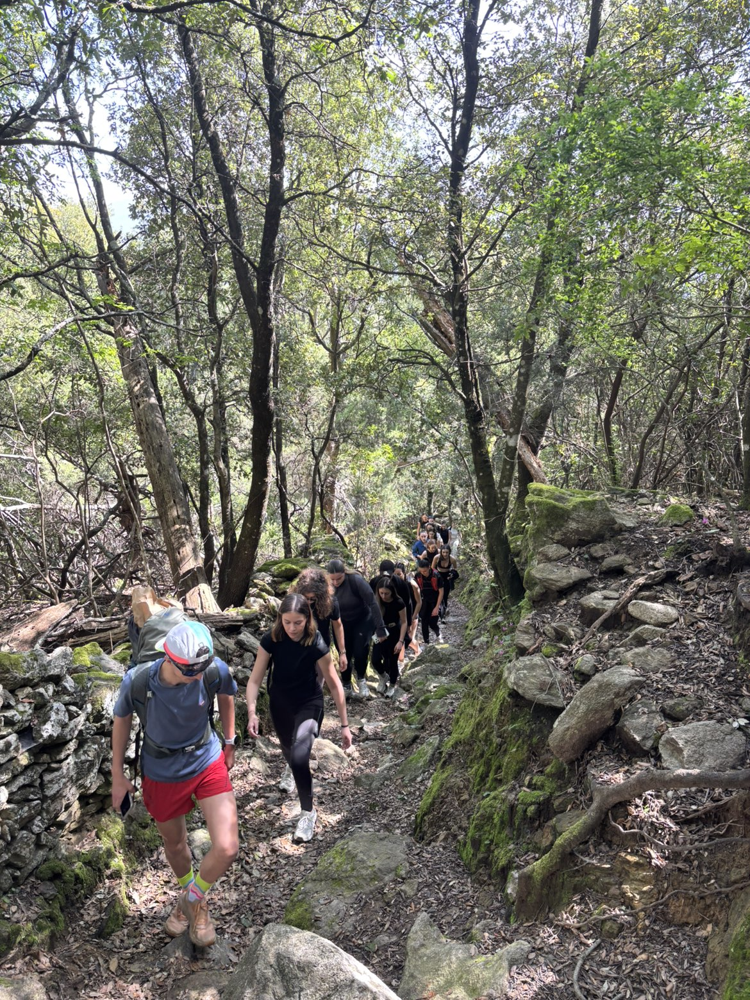
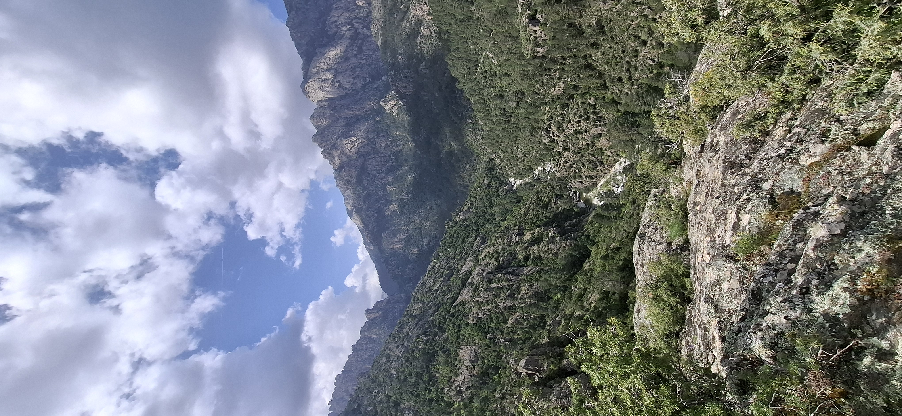
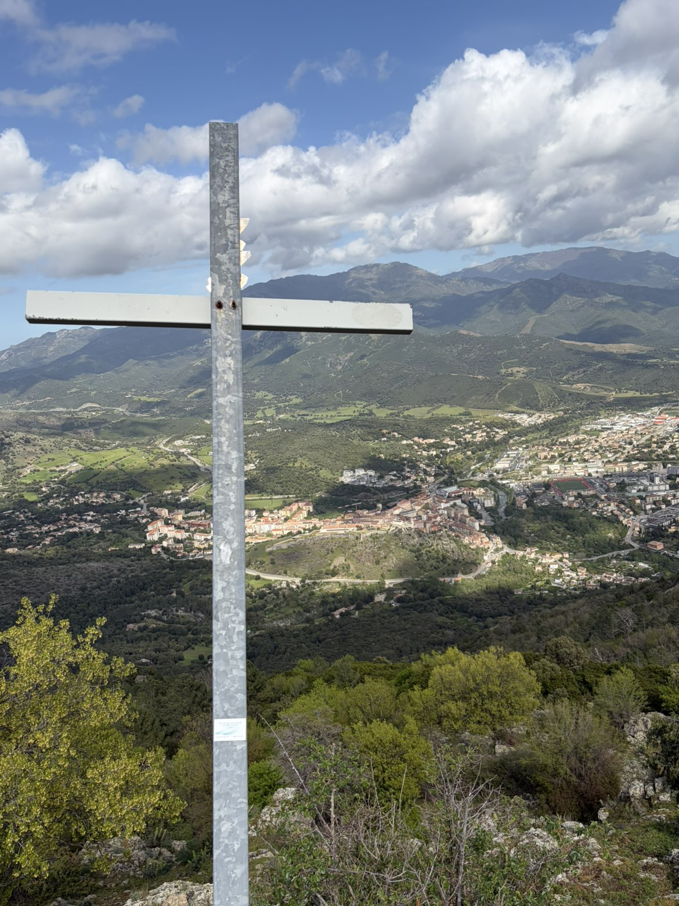
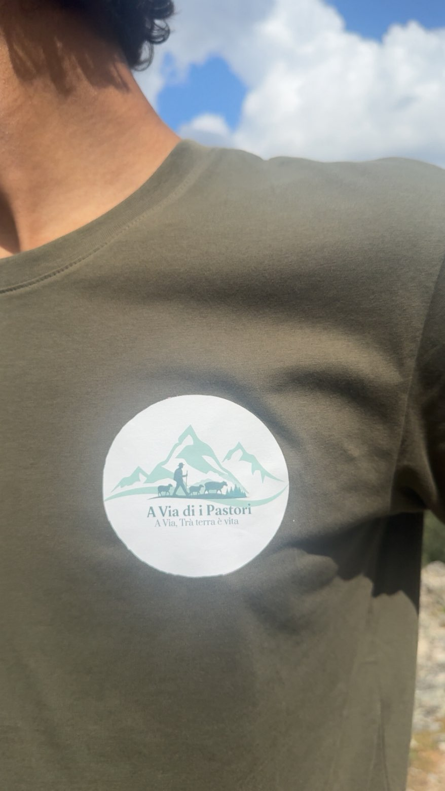

Atelier 01
Toponymie & récits
Décoder les noms corses du paysage et les histoires qu'ils gardent.
La voie des bergers — un parcours vivant sur les anciens sentiers de transhumance corse. On n'explique pas la montagne : on la marche.
A Via di i Pastori est un projet étudiant qui relie tradition, culture, jeunesse, sport et histoire — en remettant les pieds des marcheurs sur les anciens chemins de transhumance.
Un parcours-récit conçu par des étudiants pour transmettre la mémoire pastorale corse à travers la marche, le geste et la rencontre plutôt que la vitrine.
Des sentiers qui s'effacent, des savoir-faire qui se perdent. Le projet réactive un itinéraire réel et le replace au cœur d'une jeunesse qui veut comprendre son territoire.
Valoriser, transmettre, fédérer. Faire de la randonnée un support pédagogique vivant — et prouver, sur le terrain, que le projet tient debout.
Baliri ⟶ Zurmulu. Chaque point cache une histoire, un atelier, une vidéo. Cliquez un repère pour ouvrir son dossier.

Point de rassemblement à l'aube. Le café partagé, le briefing, les premiers pas sur la trace pendant que la vallée se réveille sous la brume.

Lire le paysage par ses noms. Chaque crête, chaque source porte un nom corse qui raconte un usage, un berger, une histoire. La carte devient récit.

Pause sur le plateau. Fromage, charcuterie, pain — les produits du terroir partagés à l'ombre, au point culminant de la journée.

Fin de boucle. Le bilan à chaud, les photos, la fatigue heureuse. La preuve que le sentier se marche encore — et qu'il se transmet.
Des ateliers ponctuent la marche. On apprend en avançant — chaque halte est une porte d'entrée vers le territoire.
Décoder les noms corses du paysage et les histoires qu'ils gardent.

Reconnaître le maquis, ses plantes, ses usages et ses habitants.

Une chasse au trésor pédagogique le long du sentier, en équipes.
Goûter le terroir — fromages, charcuterie, pain — au cœur du parcours.

Briefing terrain, équipement vérifié, encadrement adapté à chaque profil.
Le récit heure par heure de la journée fondatrice — Baliri ⟶ Zurmulu. Le moment où l'idée est devenue une marche.
Pas de tableau, pas de murs. On apprend la toponymie les pieds dans la caillasse, le souffle court, en regardant la crête qu'on vient de nommer. Le savoir s'ancre parce qu'il se vit.
Le repas posé sur la roche tiède. Fromage, charcuterie, pain — et la conversation qui ralentit. C'est là, à mi-parcours, que le groupe est devenu une équipe.


⤢ ⤢
⤢

⤢
⤢ ⤢
⤢
« On n'explique pas la montagne. On la marche. »
Marcher un territoire, c'est le respecter. Chaque sortie est pensée pour laisser le sentier intact derrière nous.
Trajets groupés vers le point de départ.
On repart avec tout ce qu'on apporte.
On reste sur la trace, on protège le maquis.
Comprendre le milieu pour mieux le préserver.
Encadrement, météo, matériel vérifié.
Producteurs et acteurs du territoire.
Quatre étudiants du BUT GEA, une même envie : faire exister le projet par les pieds, pas seulement sur le papier.
Marchez la voie des bergers avec nous. Remplissez votre demande — nous revenons vers vous avec la date et les détails du sentier.